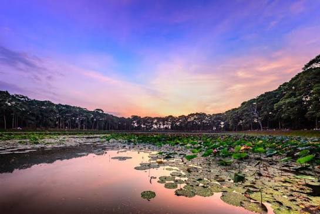

Trà Vinh là một vùng đất thuộc khu vực Đồng bằng sông Cửu Long, nổi tiếng với vẻ đẹp bình dị, không gian thiên nhiên trong lành và nền văn hóa đặc sắc. Nơi đây là sự giao thoa văn hóa của ba dân tộc Kinh, Khmer và Hoa, tạo nên những nét riêng biệt trong đời sống, phong tục, kiến trúc và ẩm thực. Trà Vinh không chỉ hấp dẫn du khách bởi những cảnh đẹp thiên nhiên mà còn bởi sự thân thiện, hiếu khách và chân thành của người dân địa phương.
Khi đặt chân đến Trà Vinh, du khách sẽ có cơ hội khám phá nhiều địa điểm du lịch nổi tiếng như Ao Bà Om, chùa Âng, biển Ba Động và Cồn Chim. Mỗi địa điểm đều mang một vẻ đẹp riêng, từ không gian xanh mát của những hàng cây cổ thụ, nét kiến trúc độc đáo của các ngôi chùa Khmer cho đến vẻ đẹp bình yên của vùng biển miền Tây. Đây là những địa điểm thích hợp để tham quan, chụp ảnh, thư giãn và tìm hiểu thêm về thiên nhiên, văn hóa địa phương.
Bên cạnh những danh lam thắng cảnh, Trà Vinh còn được biết đến với nền ẩm thực phong phú và mang đậm bản sắc vùng miền. Du khách có thể thưởng thức nhiều món ăn đặc sản như bún nước lèo, bánh tét Trà Cuôn, dừa sáp Cầu Kè và nhiều món ăn truyền thống của người Khmer. Những món ăn này không chỉ có hương vị thơm ngon mà còn thể hiện sự khéo léo, sáng tạo trong cách chế biến của người dân địa phương. Đây cũng là một trong những yếu tố tạo nên sức hấp dẫn cho hành trình khám phá Trà Vinh.
Một trong những trải nghiệm thú vị khi đến Trà Vinh là tham gia các hoạt động du lịch cộng đồng. Du khách có thể đến thăm các hộ dân làm du lịch, trải nghiệm cuộc sống thường ngày, tham quan vườn cây ăn trái, tìm hiểu nghề truyền thống và thưởng thức những món ăn do chính người dân chuẩn bị. Đặc biệt, mô hình homestay giúp du khách có cơ hội nghỉ ngơi trong không gian gần gũi với thiên nhiên, tìm hiểu phong tục tập quán và cảm nhận rõ hơn nét đẹp trong đời sống văn hóa của người dân.
Ngoài ra, Trà Vinh còn có nhiều hoạt động văn hóa truyền thống đặc sắc, đặc biệt là các lễ hội của đồng bào Khmer như lễ hội Ok Om Bok và đua ghe Ngo. Những hoạt động này góp phần bảo tồn các giá trị văn hóa dân tộc, đồng thời tạo thêm nhiều trải nghiệm hấp dẫn cho khách du lịch. Thông qua việc tham gia và tìm hiểu các hoạt động văn hóa, du khách sẽ có thêm kiến thức về lịch sử, phong tục và đời sống tinh thần của người dân địa phương.
Phát triển du lịch cộng đồng không chỉ mang lại những trải nghiệm mới mẻ cho du khách mà còn tạo cơ hội tăng thu nhập cho các hộ dân địa phương. Việc giới thiệu các dịch vụ ăn uống, nghỉ ngơi, di chuyển và trải nghiệm văn hóa sẽ giúp du khách dễ dàng lựa chọn những hoạt động phù hợp với nhu cầu của mình. Đồng thời, đây cũng là cách quảng bá hình ảnh quê hương, giới thiệu các sản phẩm đặc trưng và góp phần thúc đẩy kinh tế địa phương phát triển.
Với cảnh quan thiên nhiên tươi đẹp, nền văn hóa đa dạng, ẩm thực đặc sắc và con người thân thiện, Trà Vinh hứa hẹn sẽ là điểm đến mang lại nhiều kỷ niệm đáng nhớ. Hãy đến và trải nghiệm du lịch cộng đồng tại Trà Vinh để khám phá những điều thú vị, cảm nhận vẻ đẹp bình dị của miền Tây và cùng chung tay quảng bá những giá trị văn hóa truyền thống của quê hương.